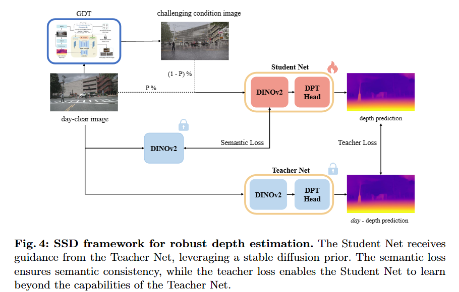
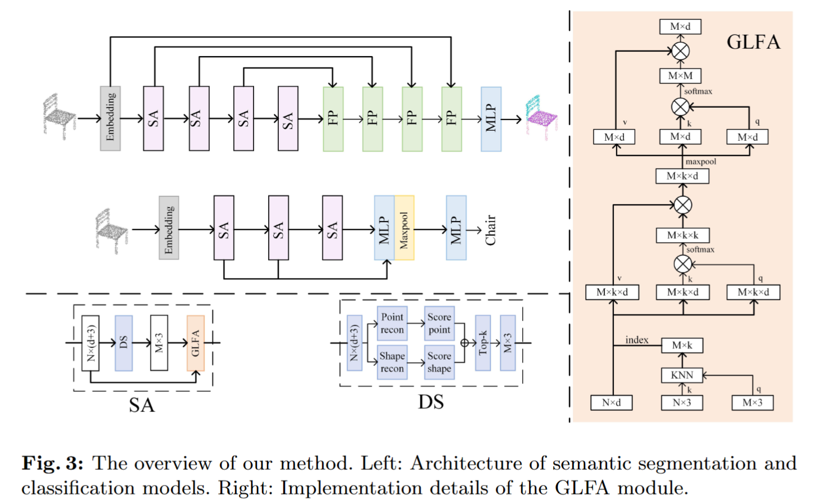

Jian Liu (Benjamin) 刘建PHD studentAdvanced Imaging and Intelligent Analysis Laboratory
|

|
Biography
I am a second-year PhD student in Computer Science at Harbin Institute of Technology (HIT), collaborating with Prof. Xianming Liu. I obtained my Bachelor's degree in Software Engineering from HIT in 2022. I am actively engaged in research focused on various aspects of 3D vision, including depth estimation, 3D occupancy prediction and AIGC 3D. Additionally, I am also involved in the exciting field of AI4Science, specifically in the area of airfoil design.
Experience
- Sep.2023 - Now , Research Intern, Shanghai AI Lab, supervised by Shixiang Tang and Wanli Ouyang
- May.2022 - Aug.2023 , Research Intern, Megvii Research, supervised by Zhewei Huang
- Aug.2021 - Oct.2021, Software Dev Engineer Intern, Alibaba
Challenges
- 1st place at Robust Depth Estimation @RoboDrive Challenge 2024, ICRA 2024 Workshop
-
Innovation Award at 3D occupancy prediction @autonomous driving challenge , CVPR 2023 Workshop
(Most Influential Competition among 100+ CVPR 2023 workshops) - 1st place at RGB+TOF Depth Completion @MIPI-challenge 2022 validation leaderboard, ECCV 2022 Workshop
Selected Awards
- Outstanding Graduates of Harbin Institute of Technology, 2022
- China National Scholarship, 2021
- The First-class Scholarship at Harbin Institute of Technology, 2019&2020&2021
- The First Prize at Mathematics competition of Chinese College Students, 2019
Publications
|  | Stealing Stable Diffusion Prior for Robust Monocular Depth Estimation Yifan Mao, Jian Liu (equal contribution), Xianming Liu Arxiv 2024 [PDF] [Github] [Project Page] |
|  | REPS: Reconstruction-based Point Cloud Sampling Guoqing Zhang, Wenbo Zhao, Jian Liu (project leader), Xianming Liu Arxiv 2024 [PDF] [Github] |
OccTransformer: Improving BEVFormer for 3D camera-only occupancy prediction Jian Liu, Sipeng Zhang, Chuixin Kong, Wenyuan Zhang, Yuhang Wu, Yikang Ding, Borun Xu, Ruibo Ming, Donglai Wei, Xianming Liu Arxiv 2024 [PDF] |
|
 |
A Comprehensive Survey on 3D Content Generation Jian Liu, Xiaoshui Huang, Tianyu Huang, Lu Chen, Yuenan Hou, Shixiang Tang, Ziwei Liu, Wanli Ouyang, Wangmeng Zuo, Junjun Jiang, Xianming Liu Arxiv 2024 [PDF] [Github] |